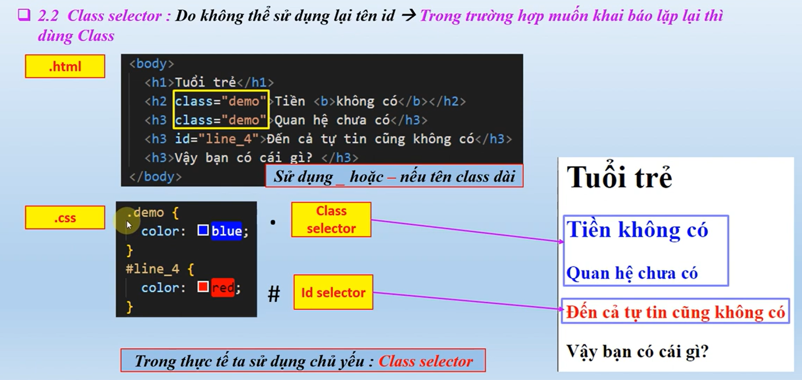

CSS selectors are patterns used to select the elements you want to style. They can target elements based on their type, class, ID, attributes, and more.
/* Type Selector */
p {
color: blue;
}
/* Class Selector */
.highlight {
background-color: yellow;
}
/* ID Selector */
#main-title {
font-size: 2em;
}
/* Attribute Selector */
input[type="text"] {
border: 1px solid #ccc;
}
/* Pseudo-class Selector */
a:hover {
text-decoration: underline;
}
/* Pseudo-element Selector */
p::first-line {
font-weight: bold;
}
For more detailed information on CSS selectors, you can refer to the W3Schools CSS Selectors Reference.
Element selector cho phép bạn chọn tất cả các phần tử của một loại cụ thể.
Ví dụ, để chọn tất cả các thẻ p, bạn có thể sử dụng:
p {
color: blue;
}
Điều này sẽ làm cho tất cả các đoạn văn bản trong thẻ p có
màu xanh.
Đây là đoạn văn bản chính của trang. Nó được định dạng bằng cách sử dụng ID selector trong CSS.
Bạn có thể thay đổi màu sắc và kích thước của đoạn văn này bằng cách chỉnh sửa CSS.
Vì ID selector chỉ áp dụng cho một phần tử duy nhất, bạn có thể sử dụng class selector để áp dụng cho nhiều phần tử.
Đây là một đoạn văn bản được đánh dấu nổi bật bằng class selector.
Đây cũng là một đoạn văn bản được đánh dấu nổi bật bằng class selector.
Class selector cho phép bạn áp dụng cùng một kiểu dáng cho nhiều phần tử khác nhau.
Cụ thể như dưới:
Trong dự án thực tế, HTML thường có nhiều elements, class, ID khác nhau. Vì vậy, chỉ sử dụng 2 selectors đơn giản như trên sẽ không đáp ứng được yêu cầu. Chúng ta sẽ tìm hiểu về các selector nâng cao hơn trong các phần sau.